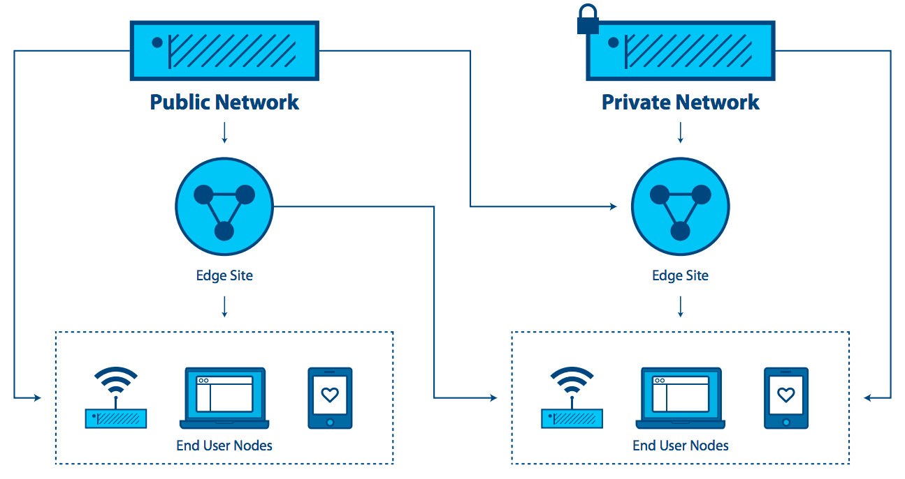
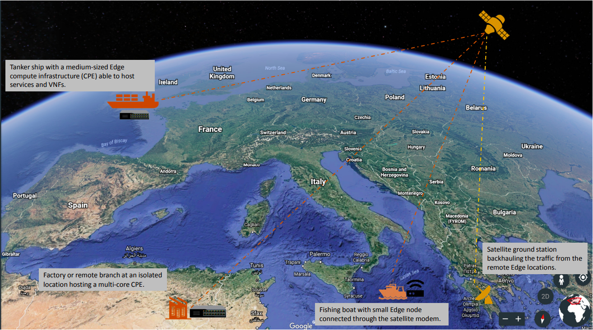

Cloud Edge Computing: Beyond the Data Centre¶
INTRODUCTION¶
For over a decade, centralised cloud computing has been considered a standard IT delivery platform. Though cloud computing is ubiquitous, emerging requirements and workloads are beginning to expose its limitations. With its strong data centre centric view, where compute and storage resources are relatively plentiful and centralized, little or no thought was ever given to the optimisation of the supporting hypervisor and management platform footprint. Few cloud developers seriously considered the requirements needed to support resource-constrained nodes reachable only over unreliable or bandwidth-limited network connections, or thought about the needs of applications that demand very high bandwidth, low latency, or widespread compute capacity across many sites.
New applications, services, and workloads increasingly demand a different kind of architecture, one that’s built to directly support a distributed infrastructure. New requirements for availability and cloud capability at remote sites are needed to support both today’s requirements (retail data analytics, network services) and tomorrow’s innovations (smart cities, AR/VR). The maturity, robustness, flexibility, and simplicity of cloud now needs to be extended across multiple sites and networks in order to cope with evolving demands.
Recently companies have begun to apply the simplified administration and flexibility of cloud computing architectures to distributed infrastructures that span across multiple sites and networks. Organisations have an emerging need to take cloud capabilities across WAN networks and into increasingly smaller deployments out at the network edge. Though this approach is in its early days, it is becoming clear that many emerging use cases and scenarios would benefit from distributed architectures.
In this paper, we explore this emerging need. It has been called many names: distributed cloud, fog computing, 4th generation data centres, but for the purposes of this document, we will stick with a common, easily understood term—cloud edge computing.
The OSF Edge Computing Group sees this evolution of cloud computing as very exciting, though we recognize that OpenStack’s ability to support cloud edge computing is in its early days. Based on initial community interest expressed at the OpenStack Summit Boston, a two-day workshop was held in September 2017 that brought together over 200 users and developers to start the hard work of defining relevant use cases and considering the tools and architectures needed to support them. Proof of concepts have been done and the community has a few early deployments in place. The OSF Edge Computing Group has now taken up the challenge to describe fundamental requirements of a fully functional edge computing cloud infrastructure.
In this document, we aim to accomplish several important tasks:
- Cultivate a conversation around cloud edge computing, including some basic definitions, stimulating interest and engagement from the open source community.
- Guide both the broader open source and OpenStack communities in developing tools and standards needed for broad adoption.
- Explore how current tools, standards and architectures may need to change to accommodate this distributed cloud model.
There is much work to be done to achieve our goals, and we welcome and encourage the entire open source community to join in both the effort and the opportunity of creating or adapting tools to meet the new requirements of cloud edge computing.
WHAT IS CLOUD EDGE COMPUTING?¶
It is worth highlighting that many overlapping and sometimes conflicting definitions of edge computing exist—edge computing means many things to many people. But for our purposes, the most mature view of edge computing is that it is offering application developers and service providers cloud computing capabilities, as well as an IT service environment at the edge of a network.
The aim is to deliver compute, storage, and bandwidth much closer to data inputs and/or end users. An edge computing environment is characterised by potentially high latency among all the sites and low and unreliable bandwidth—alongside distinctive service delivery and application functionality possibilities that cannot be met with a pool of centralised cloud resources in distant data centres. By moving some or all of the processing functions closer to the end user or data collection point, cloud edge computing can mitigate the effects of widely distributed sites by minimising the effect of latency on the applications.
Edge computing first emerged by virtualizing network services over WAN networks, taking a step away from the data centre. The initial use cases were driven by a desire to leverage a platform that delivered the flexibility and simple tools that cloud computing users have become accustomed to.
As new edge computing capabilities emerge, we see a changing paradigm for computing—one that is no longer necessarily bound by the need to build centralised data centres. Instead, for certain applications, cloud edge computing is taking the lessons of virtualisation and cloud computing and creating the capability to have potentially thousands of massively distributed nodes that can be applied to diverse use cases, such as industrial IoT or even far-flung monitoring networks for tracking real time water resource usage over thousands, or millions, of locations.
Many proprietary and open source edge computing capabilities already exist without relying on distributed cloud—some vendors refer to this as “device edge.” Components of this approach include elements such as IoT gateways or NFV appliances. But increasingly, applications need the versatility of cloud at the edge, although the tools and architectures needed to build distributed edge infrastructures are still in their infancy. Our view is that the market will continue to demand better capabilities for cloud edge computing.
Edge computing capabilities include, but are not limited to:
- A consistent operating paradigm across diverse infrastructures.
- The ability to perform in a massively distributed (think thousands of global locations) environment.
- The need to deliver network services to customers located at globally distributed remote locations.
- Application integration, orchestration and service delivery requirements.
- Hardware limitations and cost constraints.
- Limited or intermittent network connections.
- Methods to address applications with strict low latency requirements (AR/VR, voice, and so forth).
- Geofencing and requirements for keeping sensitive private data local.
A DEEPER EXPLORATION OF EDGE COMPUTING CONSIDERATIONS¶
The “edge” in edge computing refers to the outskirts of an administrative domain, as close as possible to discrete data sources or end users. This concept applies to telecom networks, to large enterprises with distributed points of presence such as retail, or to other applications, in particular in the context of IoT.

One of the characteristics of edge computing is that the application is strongly associated with the edge location. For telecoms, “the edge” would refer to a point close to the end user but controlled by the provider, potentially having some elements of workloads running on end user devices. For large enterprises, “the edge” is the point where the application, service or workload is used (e.g. a retail store or a factory). For the purposes of this definition, the edge is not an end device with extremely limited capacity for supporting even a minimal cloud architecture, such as an IoT or sensor device. This is an important consideration, because many discussions of edge computing do not make that distinction.
Edge computing is similar to data centre computing in that:
- It includes compute, storage and networking resources.
- Its resources may be shared by many users and many applications.
- It benefits from virtualisation and abstraction of the resource pool.
- It benefits from the ability to leverage commodity hardware.
- It uses APIs to support interoperability.
Edge computing differs from computing in large data centres in that:
- Edge sites are as close as possible to end users. They improve the experience over high latency and unreliable connections.
- May require specialised hardware, such as GPU/FPGA platforms for AR/VR functionality.
- Edge can scale to large numbers of sites, distributed in distinct locations.
- An edge site’s location and the identity of the access links it terminates are significant. An application that needs to run close to its users, needs to be in the right part of the edge. It is common for the application location to matter in edge computing.
- The entire pool of sites can be considered to be dynamic. Because of their physical separation, edge sites will, in some cases, be connected to each other and the core with WAN connections. Edge sites will join and leave the pool of infrastructure over time.
- Edge sites are remote and potentially unmanned, and therefore must be administered remotely. Tools need to support intermittent network access to the site.
- Edge supports large differences in site size and scale, from data centre scale down to a single device.
- Edge sites may be resource constrained; adding capacity to an existing site is restricted due to space or power requirements.
- Multi-tenancy on a massive scale is required for some of the use cases.
- Isolation of edge computing from data centre clouds may be required to ensure that compromises in the “external cloud” domain cannot impact services.
The concept of edge computing must cover both the edge site (e.g. the compute, network and storage infrastructure), but also the applications (workloads) that run on it. It is worth noting that any applications in an edge computing environment could potentially leverage any or all of the capabilities provided by a cloud—compute, block storage, object storage, virtual networking, bare metal, or containers.
The essential features that define and separate edge computing from cloud computing are:
- The ability to support a dynamic pool of multiple potentially widely distributed sites,
- Potentially unreliable network connections, and
- The likelihood of difficult-to-resolve resource constraints at sites across the network.
EXPLORING CHARACTERISTICS AND USE CASES¶
So what do we know so far about edge computing characteristics, use cases, and scenarios?
The defining need that drives cloud edge computing is the need for service delivery to be closer to users or end-point data sources. Edge computing environments will work in conjunction with core capacity, but aim to deliver an improved end user experience without putting unreasonable demands on connectivity to the core. Improvements result from:
- Reducing latency: The latency to the end user could be lower than it would be if the compute was farther away—making, for instance, responsive remote desktops possible, or successful AR, or better gaming.
- Mitigating bandwidth limits: The ability to move workloads closer to the end users or data collection points reduces the effect of limited bandwidth at a site. This is especially useful if the service on the edge node reduces the need to transmit large amounts of data to the core for processing, as is often the case with IoT and NFV workloads. Data reduction and local processing can be translated into both more responsive applications and reduces the cost of transporting terabytes of data over long distances.
But there are trade-offs. To deliver edge computing, it is necessary to vastly increase the number of deployments. This institutes a significant challenge to widespread edge deployments. If managing a single cloud takes a team of ten, how can an organisation cope with hundreds or even thousands of small clouds? Some requirements include:
- Standardisation and infrastructure consistency are needed. Each location has to be similar; a known quantity.
- Manageability needs to be automated; deployment, replacement and any recoverable failures should be simple and straightforward.
- Simple, cost-effective plans need to be laid for when hardware fails.
- Locally fault-tolerant designs might be important, particularly in environments
that are remote or unreachable—zero touch infrastructure is desirable. This is
a question that balances the cost of buying and running redundant hardware
against the cost of outages and emergency repairs. Considerations include:
- Do these locations need to be self-sufficient?
- If a location has a failure, no one is going to be on-site to fix it, and local spares are unlikely.
- Does it need to tolerate failures? And if it does, how long is it going to be before someone will be available to repair it—two hours, a week, a month?
- Maintainability needs to be straightforward—untrained technicians perform manual repairs and replacements, while a skilled remote administrator re-installs or maintains software.
- Physical designs may need a complete rethink. Most edge computing environments won’t be ideal—limited power, dirt, humidity and vibration have to be considered.
USE CASES¶
There are probably dozens of ways to characterise use cases and this paper is too short to provide an exhaustive list. But here are some examples to help clarify thinking and highlight opportunities for collaboration.
Four major categories of workload requirements that benefit from a distributed architecture are analytics, compliance, security, and NFV.
Data Collection and Analytics¶
IoT, where data is often collected from a large network of microsites, is an example of an application that benefits from the edge computing model. Sending masses of data over often limited network connections to an analytics engine located in a centralised data centre is counterproductive; it may not be responsive enough, could contribute to excessive latency, and wastes precious bandwidth. Since edge devices can also produce terabytes of data, taking the analytics closer to the source of the data on the edge can be more cost-effective by analysing data near the source and only sending small batches of condensed information back to the centralised systems. There is a trade-off here—balancing the cost of transporting data to the core against losing some information.
Security¶
Unfortunately, as edge devices proliferate––including mobile handsets and IoT sensors––new attack vectors are emerging that take advantage of the proliferation of endpoints. Edge computing offers the ability to move security elements closer to the originating source of attack, enables higher performance security applications, and increases the number of layers that help defend the core against breaches and risk.
Compliance Requirements¶
Compliance covers a broad range of requirements, ranging from geofencing, data sovereignty, and copyright enforcement. Restricting access to data based on geography and political boundaries, limiting data streams depending on copyright limitations, and storing data in places with specific regulations are all achievable and enforceable with edge computing infrastructure.
Network Function Virtualisation (NFV)¶
Network Function Virtualisation (NFV) is at its heart the quintessential edge computing application because it provides infrastructure functionality. Telecom operators are looking to transform their service delivery models by running virtual network functions as part of, or layered on top of, an edge computing infrastructure. To maximise efficiency and minimise cost/complexity, running NFV on edge computing infrastructure makes sense.
Real-time¶
Real-time applications, such as AR/VR, connected cars, telemedicine, tactile internet Industry 4.0 and smart cities, are unable to tolerate more than a few milliseconds of latency and can be extremely sensitive to jitter, or latency variation. As an example, connected cars will require low latency and high bandwidth, and depend on computation and content caching near the user, making edge capacity a necessity. In many scenarios, particularly where closed-loop automation is used to maintain high availability, response times in tens of milliseconds are needed, and cannot be met without edge computing infrastructure.
Immersive¶
Edge computing expands bandwidth capabilities, unlocking the potential of new immersive applications. Some of these include AR/VR, 4K video, and 360° imaging for verticals like healthcare. Caching and optimising content at the edge is already becoming a necessity since protocols like TCP don’t respond well to sudden changes in radio network traffic. Edge computing infrastructure, tied into real-time access to radio/network information can reduce stalls and delays in video by up to 20% during peak viewing hours, and can also vary the video feed bitrate based on radio conditions.
Network Efficiency¶
Many applications are not sensitive to latency and do not require large amounts of nearby compute or storage capacity, so they could theoretically run in a centralised cloud, but the bandwidth requirements and/or compute requirements may still make edge computing a more efficient approach. Some of these workloads are common today, including video surveillance and IoT gateways, while others, including facial recognition and vehicle number plate recognition, are emerging capabilities. With many of these, the edge computing infrastructure not only reduces bandwidth requirements, but can also provide a platform for functions that enable the value of the application—for example, video surveillance motion detection and threat recognition. In many of these applications, 90% of the data is routine and irrelevant, so sending it to a centralised cloud is prohibitively expensive and wasteful of often scarce network bandwidth. It makes more sense to sort the data at the edge for anomalies and changes, and only report on the actionable data.
Self-contained and autonomous site operations¶
Many environments, even today, have limited, unreliable or unpredictable connectivity. These could include transportation (planes, buses, ships), mining operations (oil rigs, pipelines, mines), power infrastructure (wind farms, solar power plants), and even environments that should typically have good connectivity, like stores. Edge computing neatly supports such environments by allowing sites to remain semi-autonomous and functional when needed or when the network connectivity is not available. The best example of this approach is the need for retail locations to maintain their point of sales (POS) systems, even when there is temporarily no network connectivity.
Privacy¶
Enterprises may have needs for edge computing capacity depending on workloads, connectivity limits and privacy. For example, medical applications that need to anonymise personal health information (PHI) before sending it to the cloud could do this utilising edge computing infrastructure.
Another way to look at requirements that would benefit from cloud edge computing is by the type of company that would deploy them. Operator applications are workloads put on edge computing infrastructure that is built and managed by operators—telecommunications companies, for example. Third-party applications are built by organizations to run on existing edge infrastructure, in order to leverage others’ edge computing infrastructure. It is worth noting that any applications could leverage any or all of the capabilities provided by a cloud—compute, block storage, object storage, virtual networking, bare metal, or containers.
SCENARIOS¶
The basic characteristic of the edge computing paradigm is that the infrastructure is located closer to the end user, that the scale of site distribution is high and that the edge nodes are connected by WAN network connections. Examining a few scenarios in additional depth helps us evaluate current capabilities that map to the use case, as well as highlighting weaknesses and opportunities for improvement.
Retail/finance/remote location “cloud in a box”: Edge computing infrastructure that supports a suite of applications customized to the specific company or industry vertical. Often used by the enterprise, edge computing infrastructure, ultimately coupled together into distributed infrastructure, to reduce the hardware footprint, standardize deployments at many sites, deliver greater flexibility to replace applications located at the edge (and to have the same application running uniformly in all nodes irrespective of HW), boost resiliency, and address concerns about intermittent WAN connections. Caching content or providing compute, storage, and networking for self-contained applications are obvious uses for edge computing in settings with limited connectivity.
Mobile connectivity: Mobile/wireless networks are likely to be a common environmental element for cloud edge computing, as mobile networks will remain characterised by limited and unpredictable bandwidth, at least until 5G becomes widely available. Applications such as augmented reality for remote repair and telemedicine, IoT devices for capturing utility (water, gas, electric, facilities management) data, inventory, supply chain and transportation solutions, smart cities, smart roads and remote security applications will all rely on the mobile network to greater or lesser degrees. They will all benefit from edge computing’s ability to move workloads closer to the end user.
Network-as-a-Service (NaaS): Coming from the need to deliver an identical network service application experience in radically different environments, the NaaS use case requires both a small footprint of its distributed platform at the edges, and strong centralized management tools that cross over unreliable or limited WAN network connections in support of the services out on the edge. The main characteristics of this scenario are: small hardware footprint, moving (changing network connections) and constantly changing workloads, hybrid locations of data and applications. This is one of the cases that needs infrastructure to support micro nodes—small doses of compute in non-traditional packages (not all 19in rack in a cooled data centre). NaaS will require support for thousands or tens of thousands of nodes at the edge and must support mesh and/or hierarchical architectures as well as on demand sites that might spin up as they are needed and shutdown when they are done. APIs and GUIs will have to change to reflect that large numbers of compute nodes will have different locations instead of being present in the same data centre.

Universal Customer Premises Equipment (uCPE): This scenario, already being deployed today, demands support for appliance-sized hardware footprints and is characterised by limited network connections with generally stable workloads requiring high availability. It also requires a method of supporting hybrid locations of data and applications across hundreds or thousands of nodes and scaling existing uCPE deployments will be an emerging requirement.
This is particularly applicable to NFV applications where different sites might need a different set of service chained applications, or sites with a different set of required applications that still need to work in concert. Mesh or hierarchical architectures would need to be supported with localised capacity and the need to store and forward data processing due to intermittent network connections. Self-healing and self-administration combined with the ability to remotely administer the node are musts.
Satellite enabled communication (SATCOM): This scenario is characterised by numerous capable terminal devices, often distributed to the most remote and harsh conditions. At the same time, it makes sense to utilize these distributed platforms for hosting services, especially considering the extremely high latency, limited bandwidth and the cost of over-the-satellite communications. Specific examples of such use cases might include vessels (from fishing boats to tanker ships), aircraft, oil rigs, mining operations or military grade infrastructure.

{kind=link}
{kind=link}
CHALLENGES¶
Though there are plenty of examples of edge deployments already in progress around the world, widespread adoption will require new ways of thinking to solve emerging and already existing challenges and limitations.
We have established that the edge computing platform has to be, by design, much more fault tolerant and robust than a traditional data centre centric cloud, both in terms of the hardware as well as the platform services that support the application lifecycle. We cannot assume that such edge use cases will have the maintenance and support facilities that standard data centre infrastructure does. Zero touch provisioning, automation, and autonomous orchestration in all infrastructure and platform stacks are crucial requirements in these scenarios.
But there are other challenges that need to be taken under consideration.
For one, edge resource management systems should deliver a set of high-level mechanisms whose assembly results in a system capable of operating and using a geo-distributed IaaS infrastructure relying on WAN interconnects. In other words, the challenge is to revise (and extend when needed) IaaS core services in order to deal with aforementioned edge specifics—network disconnections/bandwidth, limited capacities in terms of compute and storage, unmanned deployments, and so forth.
Some foreseeable needs include:
- A virtual-machine/container/bare-metal manager in charge of managing machine/container lifecycle (configuration, scheduling, deployment, suspend/resume, and shutdown).
- An image manager in charge of template files (a.k.a. virtual-machine/container images).
- A network manager in charge of providing connectivity to the infrastructure: virtual networks and external access for users.
- A storage manager, providing storage services to edge applications.
- Administrative tools, providing user interfaces to operate and use the dispersed infrastructure.
These needs are relatively obvious and could likely be met by leveraging and adapting existing projects. But other needs for edge computing are more challenging. These include, but are not limited to:
- Addressing storage latency over WAN connections.
- Reinforced security at the edge—monitoring the physical and application integrity of each site, with the ability to autonomously enable corrective actions when necessary.
- Monitoring resource utilisation across all nodes simultaneously.
- Orchestration tools that manage and coordinate many edge sites and workloads, potentially leading toward a peering control plane or “self-organising edge.”
- Orchestration of a federation of edge platforms (or cloud-of-clouds) has to
be explored and introduced to the IaaS core services.
- Automated edge commission/decommission operations, including initial software deployment and upgrades of the resource management system’s components.
- Automated data and workload relocations—load balancing across geographically distributed hardware.
- Some form of synchronisation of abstract state propagation should be needed at the “core” of the infrastructure to cope with discontinuous network links.
- New ways to deal with network partitioning issues due to limited connectivity—coping with short disconnections and long disconnections alike.
- Tools to manage edge application life cycles, including:
- The definition of advanced placement constraints in order to cope with latency requirements of application components.
- The provisioning/scheduling of applications in order to satisfy placement requirements (initial placement).
- Data and workload relocations according to internal/external events (mobility use-cases, failures, performance considerations, and so forth).
- Integration location awareness: Not all edge deployments will require the same application at the same moment. Location and demand awareness are a likely need.
- Discrete hardware with limited resources and limited ability to expand at the remote site needs to be taken into consideration when designing both the overall architecture at the macro level and the administrative tools. The concept of being able to grab remote resources on demand from other sites, either neighbours over a mesh network or from core elements in a hierarchical network, means that fluctuations in local demand can be met without inefficiency in hardware deployments.
CONCLUSION AND CALL TO ACTION¶
Edge computing is not and should not be limited to just the components and architectures of OpenStack, but there are some reasons that OpenStack is particularly attractive as a platform for cloud edge computing. The OSF Edge Computing Group is asking the open source community to begin exploring these challenges and possibilities. We recognize that there is work to be done to achieve our goals of creating the tools to meet these new requirements. We welcome and encourage the entire open source community to join in the opportunity to define and develop cloud edge computing. You can find more information about the group activities on the OpenStack Edge Computing web page.
Visit openstack.org to get started with OpenStack or click on these resources for more information:
| Resource | Overview |
|---|---|
| OSF Edge Computing web page | A central place to find pointers to videos of previous events, articles and further content on edge computing. |
| OSF Edge Computing mailing list | A forum for discussions concerning edge and edge computing (not exclusively to OpenStack) and to receive information about ongoing activities and calls for action. |
| OpenStack Summit | A four-day conference for IT business leaders, cloud operators and developers covering the open infrastructure landscape..Look for edge-related tracks and sessions at upcoming Summits. |
| Internet Relay Chat (IRC; https://wiki.openstack.org/wiki/IRC) | Fog/Edge/Massively Distributed Clouds (FEMDC) SIG IRC meetings (online) are held every two weeks (odd weeks), 1500 UTC on Wednesday, on the IRC channel #openstack-meeting. |
| OSF events (https://www.openstack.org/community/events/) | Global schedule of events including the popular OpenStack Summits and regional OpenStack Days. |
| OpenStack Marketplace (https://www.openstack.org/marketplace/) | One-stop resource to the skilled global ecosystem for distributions, drivers, training, services and more. |
| Complete OpenStack documentation (https://docs.openstack.org/) | Index to all documentation, for every role and step in planning and operating an OpenStack cloud. |
| Welcome to the community! (https://www.openstack.org/community/) | Join mailing lists and IRC channels, find jobs and events, access the source code and more. |
| User groups (https://groups.openstack.org/) | Find a user group near you, attend meetups and hackathons—or organize one! |